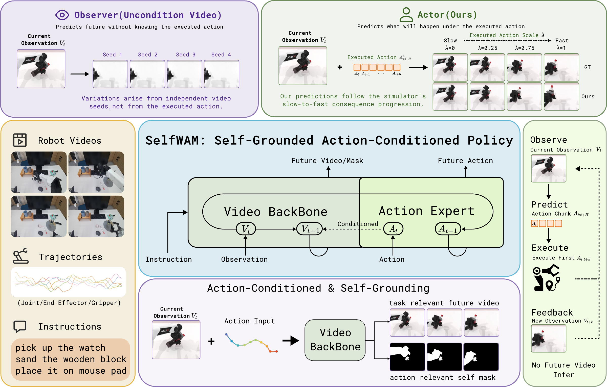
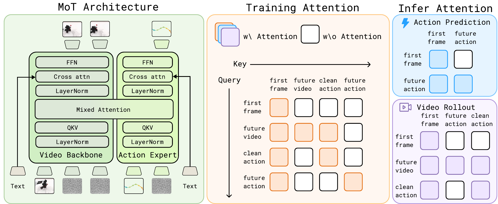
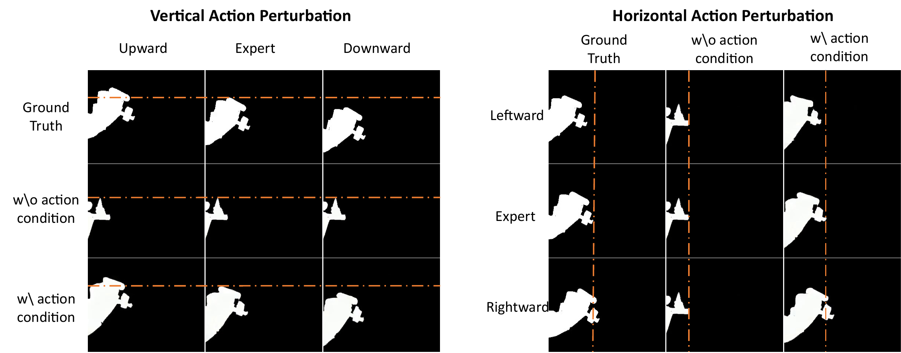
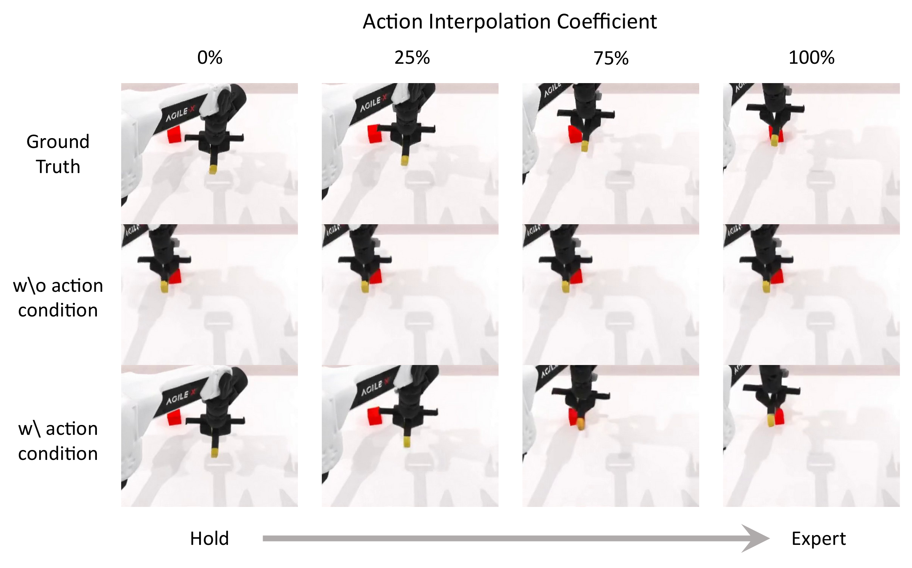

Research project · World Action Models
A self-grounded, unified World Action Model for fast robot control.
World Action Models can strengthen robot policies by learning actions and future observations together. But when future prediction sees only the task and current observation, it may learn a generic continuation instead of the consequences of the action actually taken. SelfWAM adds a clean-action path that conditions future RGB and robot self-mask prediction on the demonstrated action chunk. The result is unified consequence modeling with the same lightweight action expert preserved for fast, action-only control.
01 · Headline result
Change the action. Change the future.
We scale the executed action by λ and ask each world model to roll the future forward from the head camera. SelfWAM follows the same hold-to-expert progression as the ground truth: at λ = 0 the arm stays still; at λ = 1.0 it completes the expert motion. The action-agnostic Fast-WAM baseline cannot reproduce this response—the future changes little as the commanded action changes.
Task 01 · Beat block with hammer
Task 02 · Adjust bottle
02 · Method
A modality-specialized Mixture-of-Transformers with deliberately separated information flow.

Overview. Compared with action-unconditioned video prediction, SelfWAM shifts the model from a passive observer to an actor that predicts the visual consequences of its own actions. Its predicted motion follows the same slow-to-fast progression as the ground truth when the executed action is scaled (top). Given robot videos, trajectories and instructions, it couples a lightweight action expert with a shared video backbone; the executed action conditions the backbone to jointly predict future RGB and robot self-mask video. At deployment the video branch is removed and the action expert runs alone for fast action-only inference.
A clean copy of the executed action is routed only to future-video queries — aligning predicted dynamics with the commanded control while staying hidden from the noisy future-action path, so the policy cannot recover its target.
The same backbone jointly generates RGB and robot self-mask video, redirecting learning from background appearance toward the robot as the agent of change throughout the motion.
Once the current context is encoded, action denoising runs entirely through the lightweight action expert — no video or mask experts in the loop — preserving fast closed-loop control.

Architecture & attention design. Left: the MoT contains a video backbone and a lightweight action expert coupled through mixed attention. Middle: during training, clean executed-action tokens condition only future-video queries. Right: two inference modes — fast control uses the action expert alone; optional rollout conditions the video backbone on a supplied action to generate its visual consequences.
03 · Policy performance
Bimanual manipulation across all tasks, clean and randomized scenes.
Qualitative policy rollout
Same clean-scene episode and initial state · 2× playback
| Method | Clean ↑ | Random ↑ | Average ↑ |
|---|---|---|---|
| π0 | 65.92 | 58.40 | 62.16 |
| π0.5 | 82.74 | 76.76 | 79.75 |
| Motus | 88.66 | 87.02 | 87.84 |
| GigaWorld-Policy | 86.36 | 85.04 | 85.70 |
| Policy only † | 82.76 | 84.80 | 83.78 |
| Fast-WAM | 91.82 | 91.86 | 91.84 |
| SelfWAM (ours) | 92.16 | 93.08 | 92.62 |
† Reported Fast-WAM variant without video co-training; success rates in %.
04 · World-model video quality
275 future-video clips with an identical backbone, isolating the effect of conditioning on the demonstrated action.
LPIPS ↓
PSNR ↑
FVD-I3D ↓
Task · Beat block with hammer — expert action λ = 1.0, future RGB rollout
05 · WorldArena consistency
Standard WorldArena protocol on generated future videos.
| Model | Action Following ↑ | Subject Consistency ↑ | Background Consistency ↑ | Photometric Consistency ↑ |
|---|---|---|---|---|
| Fast-WAM | 0.0000 | 0.9138 | 0.9309 | 0.8126 |
| SelfWAM w/o mask | 0.0181 | 0.9321 | 0.9380 | 1.5168 |
| SelfWAM (ours) | 0.0184 | 0.9326 | 0.9385 | 1.4361 |
SelfWAM improves on Fast-WAM across action-following, subject and background consistency.
06 · Inference efficiency
NVIDIA H200, 32-action window, 10 denoising steps, averaged over four runs after warm-up.
07 · Analysis
Same observation, different candidate actions — SelfWAM imagines action-dependent futures for diagnosis.

Action perturbation. Candidate actions that differ in direction, gripper command or temporal scale produce visibly different futures; object change begins near a plausible contact region while unrelated background stays stable.

Action interpolation. SelfWAM predicts action-dependent future RGB and robot self-masks, revealing whether object motion is spatially and temporally compatible with the robot's own motion.
08 · Physical evaluation
Four complete manipulation trials on a physical dual-arm platform.
09 · Citation
If SelfWAM is useful in your research, please consider citing our arXiv preprint.
@misc{pan2026selfwam,
title = {SelfWAM: A Self-Grounded Unified World
Action Model for Fast Robot Control},
author = {Pan, Bikang and Liu, Fan and Lu, Haotao and
Wang, Jingya and Shi, Ye},
year = {2026},
eprint = {2608.00725},
archivePrefix = {arXiv},
primaryClass = {cs.RO},
url = {https://arxiv.org/abs/2608.00725}
}